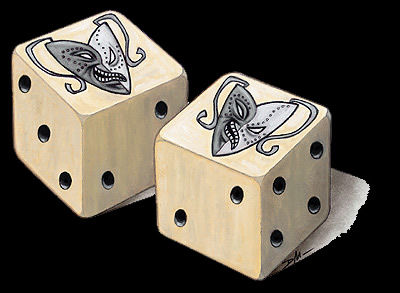
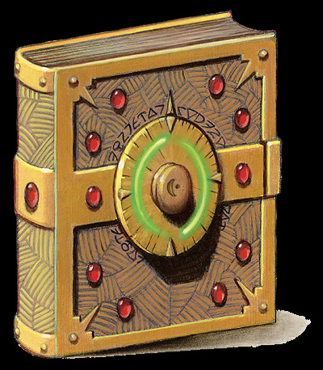

渥利达马拉之骰

这两个黄色象牙骰子看上去很像常见的普通骰子（六面），唯一的不同是普通骰子上原来表示“1”点的那一面被渥利达马拉的标志（一个又哭又笑的面具）所取代。
只有当持有者声明他要掷渥利达马拉之骰时，才算使用本魔法物品，所以任何的偶然投掷都不会产生魔法效果。投掷骰子属于一个标准动作。投掷骰子时，两个骰子必须同时掷出并且在运动中不能受到任何外力干扰。
当玩家掷渥利达马拉骰子时，就掷2d6。 所产生的效果见下表：
2d6 产生效果
2 失去10,000xp并在下轮自动重掷一次
3 永久失去1d4+1Dex
4 造成1d4负向等级（移除时强韧鉴定DC20）
5 在1小时内的攻击鉴定，豁免鉴定-1
6 在10分钟内AC-4
7 在10分钟内攻击鉴定和抗拒恐惧豁免鉴定都有+1士气加值
8 产生朦胧术一次，维持10分钟
9 在1小时内攻击鉴定和抗拒恐惧豁免鉴定都有+1洞察力（这里原文是insight）加值
10 产生行动自如术一次，维持1小时
11 产生有限许愿术一次（须在1分钟内使用）
12 给予10,000xp并在下轮可选择重掷一次
渥利达马拉之骰只能在一天使用一次。只有以下两个情况例外：掷出2，骰子会在下一轮开始时自动重掷一次，所掷出的结果无论好坏都必须接受。掷出12，你可以选择下轮是否要再次投掷。如果在一整轮里都没有投掷，则视为放弃这次额外投掷机会。
渥利达马拉之骰所掷出的结果不受预言和任何外来力量影响，不论是魔法的还是普通的（这里原文是mundace or magical）。甚至连威力巨大的预言术也不能成功预知投掷的结果。
施法者等级：20 重量：—
隐秘偷窃之册
这本指南是盗贼最高奖赏。任何游荡者花费一个星期学习其中的教训,后，敏捷将有+1内在加值，且经验值提升至下一等级的中点。
人物没有游荡者等级时就不能得到属性奖励，如果一个神术施放者没有游荡者等级而阅读此书，她将失去2d6*1000XP，并且做意志鉴定（DC20）不然就永久失去1点感知。
除非仔细研读，否则隐秘偷窃之册不能被从其他书卷典籍或其他的可阅读之物中区别开。阅读过一次后，书就消失不见，不能再被阅读，同一个人物不能再次阅读类似书籍。
施法者等级：19。重量：3lb
战斗大师之册
这本专著包含各种专家在战斗艺术上给予的忠告和教诲。任何野蛮人，战士，武僧，圣武士，巡林客在花费一个星期学习这本手册后，力量将有+1内在加值，且经验值提升至下一等级的中点。（如果阅读者拥有等级列表上的多个职业，他必须选择一个进行提升。）
人物没有列表上的职业时就不能得到属性奖励，如果一个法术施放者没有列表上的等级而阅读此书，她将失去2d6*1000XP，并且做意志鉴定（DC20）不然就永久失去1点智慧。
除非仔细研读，否则战斗大师之册不能被从其他书卷典籍或其他的可阅读之物中区别开。阅读过一次后，书就消失不见，不能再被阅读，同一个人物不能再次阅读类似书籍。
施法者等级：19。重量：3lb
强力施法典籍

这本神秘的魔法书对于善良阵营的施法者（LG，NG，CG）有极大的价值。研读这本书需要整整一周的时间。当完成时，善良的施法者将在施法者的关键属性上有+1内在加值（例如对于法师就是智力，对于吟游诗人和术士就是魅力）且经验值提升至下一等级的中点。（如果阅读者拥有多个可施法职业，他必须选择一个进行提升。）
非善良施法者（LN，N，CN，LE，NE，CE）将永久失去1d4+1点体质，而且除非赎罪（见赎罪术说明），否则就不能再得到经验值。
任何非施法者如果看了其中的任何一个字必须进行意志鉴定（DC20）否则就受摄魂术（见摄魂术说明）
除非仔细研读，否则强力施法典籍不能被从其他书卷典籍或其他的可阅读之物中区别开。阅读过一次后，书就消失不见，不能再被阅读，同一个人物不能再次阅读类似书籍。
施法者等级：19。重量：3lb
无尽毁灭典籍
这本神秘的魔法书对于邪恶阵营的施法者（LE，NE，CE）有极大的价值。研读这本书需要整整一周的时间。当完成时，邪恶的施法者将在施法者的关键属性上有+1内在加值（例如对于法师就是智力，对于吟游诗人和术士就是魅力）且经验值提升至下一等级的中点。（如果阅读者拥有多个可施法职业，他必须选择一个进行提升。）
非邪恶施法者（LN，N，CN，LG，NG，CG）将永久失去1d4+1点体质，而且除非赎罪（见赎罪术说明），否则就不能再得到经验值。
任何非施法者如果看了其中的任何一个字必须进行意志鉴定（DC20）否则就受摄魂术（见摄魂术说明）
除非仔细研读，否则无尽毁灭典籍不能被从其他书卷典籍或其他的可阅读之物中区别开。阅读过一次后，书就消失不见，不能再被阅读，同一个人物不能再次阅读类似书籍。
施法者等级：19。重量：3lb
银色魔法典籍
这本神秘的魔法书对于中立阵营的施法者（LN，N，CN）有极大的价值。研读这本书需要整整一周的时间。当完成时，中立的施法者将在施法者的关键属性上有 +1内在加值（例如对于法师就是智力，对于吟游诗人和术士就是魅力）且经验值提升至下一等级的中点。（如果阅读者拥有多个可施法职业，他必须选择一个进行提升。）
善良和邪恶施法者（LE，NE，CE，LG，NG，CG）将永久失去1d4+1点体质，而且除非赎罪（见赎罪术说明），否则就不能再得到经验值。
任何非施法者如果看了其中的任何一个字必须进行意志鉴定（DC20）否则就受摄魂术（见摄魂术说明）
除非仔细研读，否则银色魔法典籍不能被从其他书卷典籍或其他的可阅读之物中区别开。阅读过一次后，书就消失不见，不能再被阅读，同一个人物不能再次阅读类似书籍。
施法者等级：19。重量：3lb